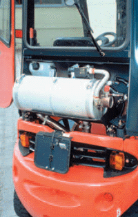
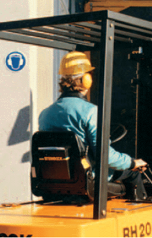

Die vom Gabelstapler ausgehenden Gesundheitsgefahren für den Gabelstaplerfahrer können sehr unterschiedlicher Art sein.
Gabelstapler mit Verbrennungsmotor dürfen in ganz oder teilweise geschlossenen Räumen nur betrieben werden, wenn in der Atemluft keine gefährlichen Konzentrationen gesundheitsschädlicher Abgasbestandteile entstehen können.
Gesundheitsschädliche Abgasbestandteile sind beim Betrieb von Gabelstaplern mit
zu erwarten.
Die Abgase von Dieselmotoren bestehen hauptsächlich aus Kohlenmonoxid, Kohlendioxid, Stickoxiden, Schwefeldioxid, Kohlenwasserstoffen und Rußpartikeln. Die Abgasemission ist abhängig von der Konstruktion des Motors, von der Qualität des Kraftstoffs und von den Betriebsbedingungen.
Rußpartikel sind als Verursacher von Lungenkrebs anzusehen. Deshalb ist der Einsatz von Flurförderzeugen mit Dieselmotor in ganz oder teilweise geschlossenen Räumen oder Hallen durch die Gefahrstoffverordnung (GefStoffV) bzw. die Technischen Regeln für Gefahrstoffe (TRGS) 554 "Dieselmotoremissionen (DME)" erheblich eingeschränkt worden.
So müssen Flurförderzeuge mit Dieselantrieb, die in Gebäuden eingesetzt werden, mit einem Rußfilter (Mindestabscheidegrad 70%) versehen sein (Bild 3-1). Der Einsatz im Freien ist weiterhin ohne Einschränkung zulässig.

Für Transportarbeiten in Gebäuden sind, sofern technisch möglich, nur noch Flurförderzeuge mit Elektroantrieb einzusetzen, was bei der Ersatzbeschaffung zu berücksichtigen ist.
Ausnahmsweise dürfen Flurförderzeuge mit Dieselantrieb und Rußfilter für den Einsatz in Gebäuden noch beschafft werden, wenn:
Als Ersatz für Dieselfahrzeuge kommen auch Flurförderzeuge mit Otto-Motoren in Betracht:
Können unter Berücksichtigung aller Möglichkeiten tatsächlich nur Flurförderzeuge mit Dieselmotor eingesetzt werden, sind die Emissionen so weit zu reduzieren, wie dies technisch möglich ist.
Dieselmotoremissionen können z. B. gemindert werden durch:
Auf den Gabelstapler übertragene Schwingungen während der Fahrt auf unebener Fahrbahn (Hoffläche, Pflaster, Torschwellen, Schienen) können bei langer Belastungsdauer zu Beschwerden und zur Erkrankung der Wirbelsäule führen. Durch einen ergonomisch gestalteten Fahrersitz (Bild 3-2) mit entsprechender Federung und Dämpfung kann diese Schwingungsbelastung erheblich reduziert werden.

Bei der Auswahl eines Fahrersitzes ist Folgendes zu beachten:
Dies gilt nicht nur für neue Stapler – auch ältere Gabelstapler können mit ergonomischen Fahrersitzen nachgerüstet werden. Um die Funktionsfähigkeit von Sitzen zu gewährleisten, sind diese regelmäßig zu warten und die Fahrer in die Funktionen der Sitze einzuweisen.
In gekennzeichneten Bereichen muss Gehörschutz getragen werden. Der richtig gewählte Gehörschutz setzt die Lärmeinwirkung am Ohr so weit herab, dass das Gehör keinen Schaden nimmt. Wichtige akustische Informationen, wie Warnsignale, Sprache und Maschinengeräusche, können noch gehört werden.
Bei der Auswahl von geeignetem Gehörschutz werden die Fachkraft für Arbeitssicherheit und der Betriebsarzt behilflich sein.
Täglicher Aufenthalt eines Staplerfahrers in Betrieben mit hohem Lärmpegel, z. B.
kann Gehörschäden verursachen, wenn die zur Verfügung gestellten Schallschutzmittel nicht benutzt werden.